Introduction
plot(aeme, "output") and friends – the S4 dispatcher
used throughout the other vignettes – cover the common case. Underneath
it, AEME ships a wider set of purpose-built plotting functions:
multi-variable timeseries, group plots for individual biogeochemical
modules, residuals against observations, and diagnostics on the inputs
(hypsograph, meteorology, flows) rather than the output. This vignette
works through them using one small built model.
aeme_file <- system.file("extdata/aeme.rds", package = "AEME")
aeme <- readRDS(aeme_file)
model_controls <- get_model_controls(use_bgc = TRUE)
model <- "glm_aed"
path <- tempdir()
aeme <- build_aeme(path = path, aeme = aeme, model = model,
model_controls = model_controls, ext_elev = 5,
use_bgc = TRUE)
#> Warning: ! `SIL_rsi`: SIL_rsi is constant across all rows -- this may be a placeholder
#> value.
#> ℹ Check raw data or unit conversion for this variable.
#> Warning: GLM ignores the AirPres met column in daily mode and uses the default 1013.25 hPa instead.
#> This warning is displayed once per session.
aeme <- run_aeme(aeme = aeme, verbose = FALSE)Timeseries
plot_ts() is the general-purpose multi-variable plot –
pass one or more var_sim, and it facets automatically.
Observations overlay by default (add_obs = TRUE) where the
Aeme object has them.
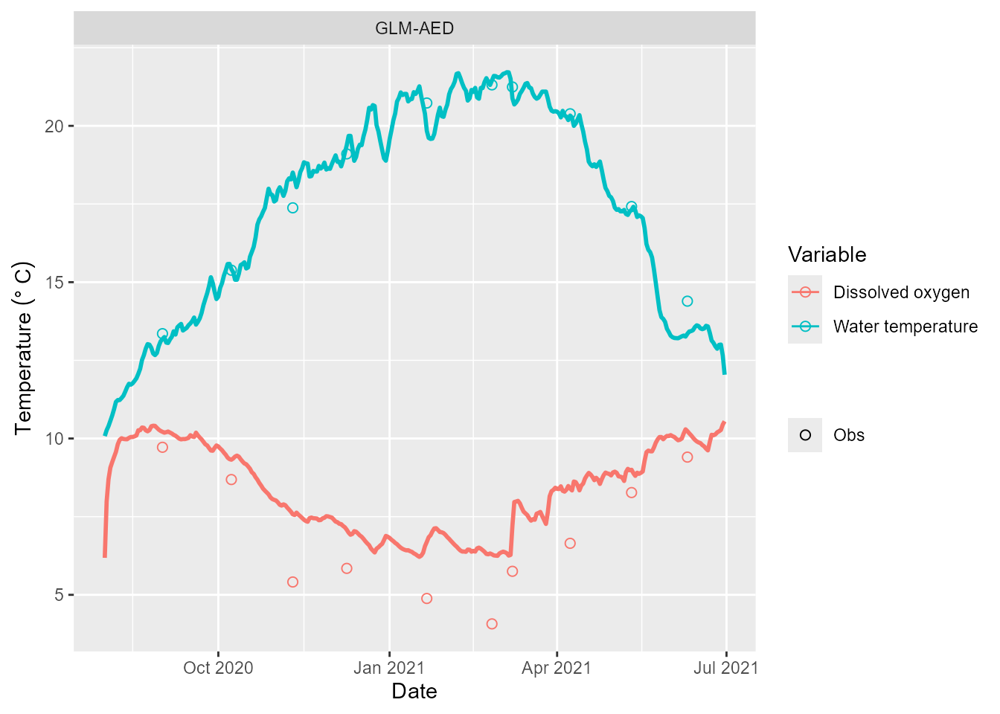
Restrict to a depth range (e.g. surface only) with
depth_range:
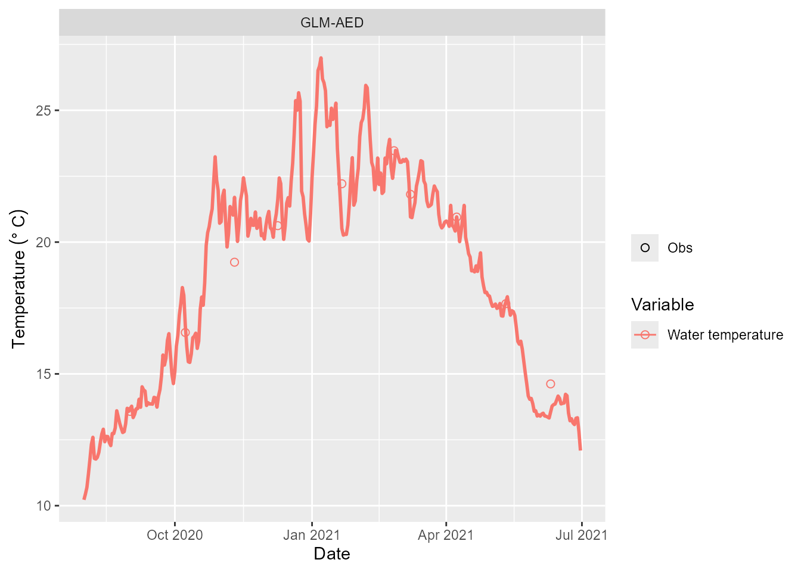
plot_var() is the lower-level building block
plot_ts() is written on top of – reach for it directly when
you already have a data.frame from get_var()
and want the same plot style without re-deriving it from the
Aeme object:
df <- get_var(aeme, model = model, var_sim = "HYD_temp", return_df = TRUE)
plot_var(df = df, aeme = aeme, model = model, var_sim = "HYD_temp")
#> $`GLM-AED`
#> Warning: Removed 84 rows containing missing values or values outside the scale range
#> (`geom_col()`).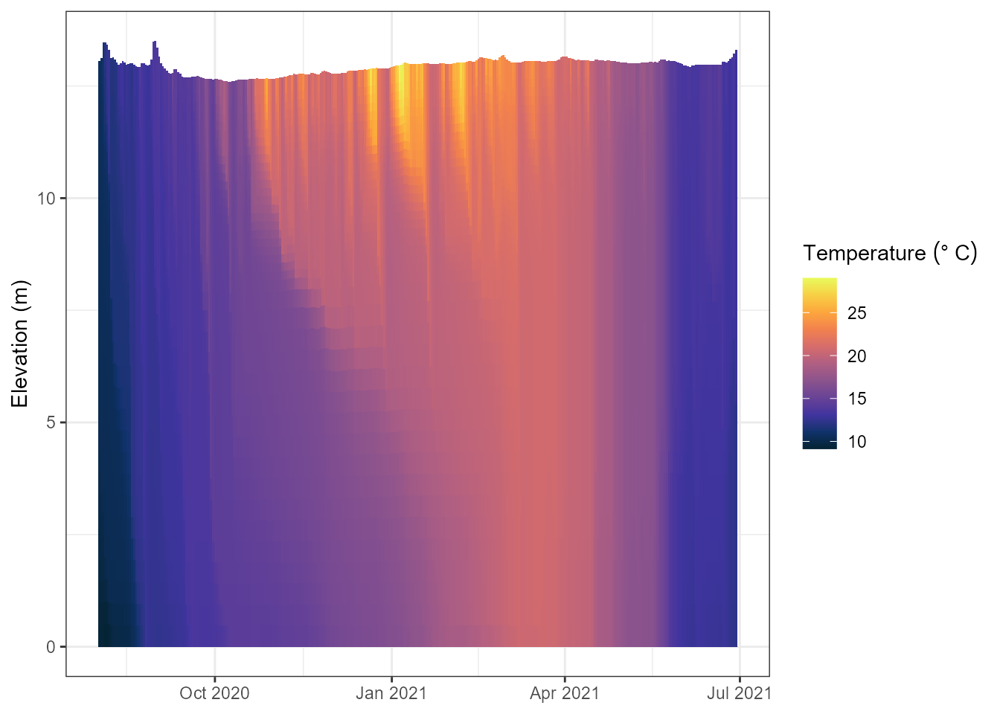
Observations and residuals
plot_obs() shows the observation record alone – useful
for checking coverage before deciding what to calibrate against (see
also summarise_obs() in
vignette("setup-new-lake")):
plot_obs(aeme, var_sim = "HYD_temp")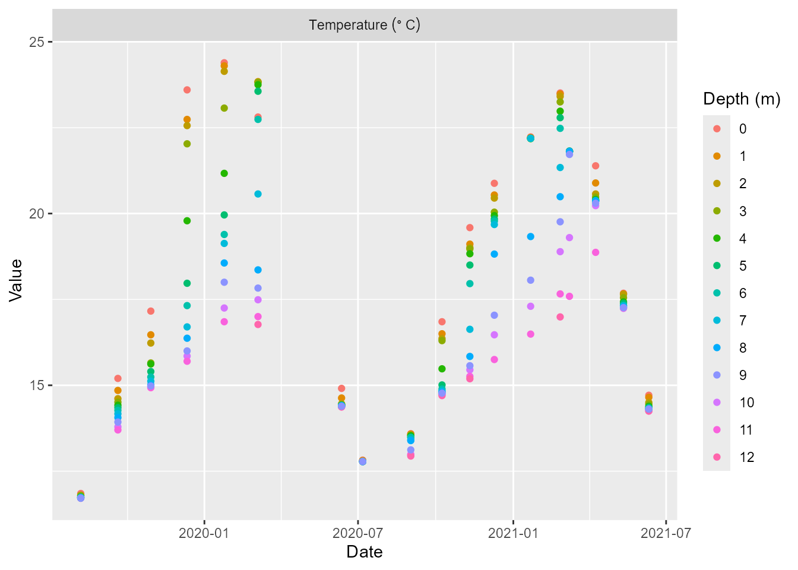
plot_resid() plots modelled-minus-observed directly,
rather than the two series overlaid – the faster way to see whether a
model is biased high/low versus just imprecise:
plot_resid(aeme, model = model, var_sim = "HYD_temp")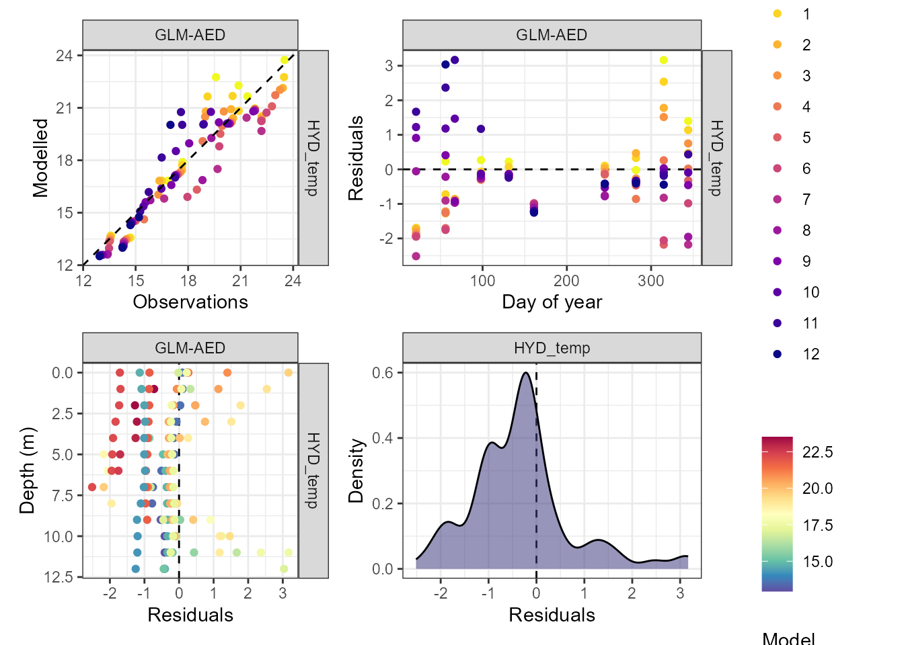
Biogeochemical group plots
Each major AED module has its own plot, all sharing the
plot_ts() argument shape (add_obs,
depth_range, remove_spin_up,
ens_n):
plot_nit(aeme)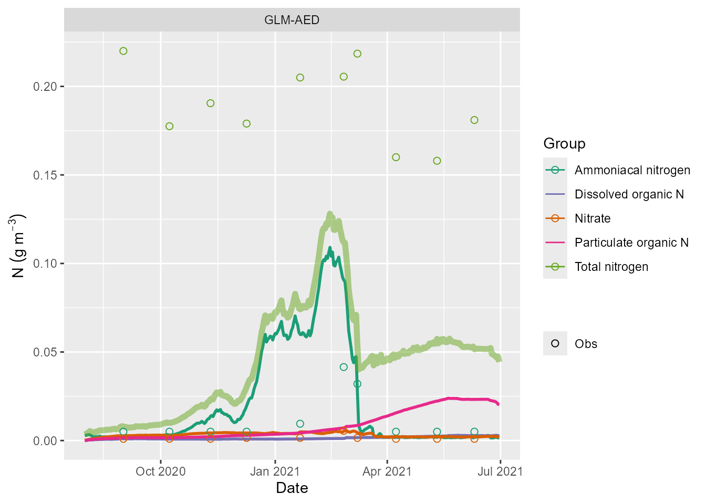
plot_phs(aeme) # phosphorus
#> Warning: ! Some variables are missing or invalid in model output:
#> glm_aed: PHS_pip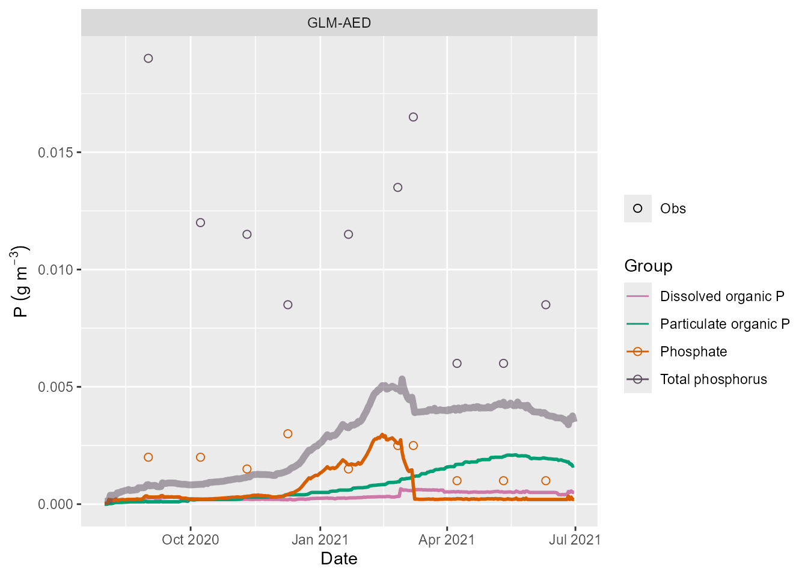
plot_car(aeme) # carbon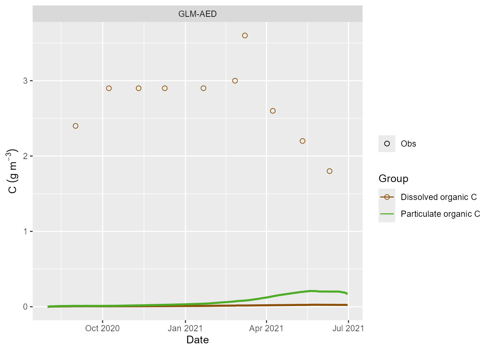
plot_phytos(aeme) # phytoplankton groups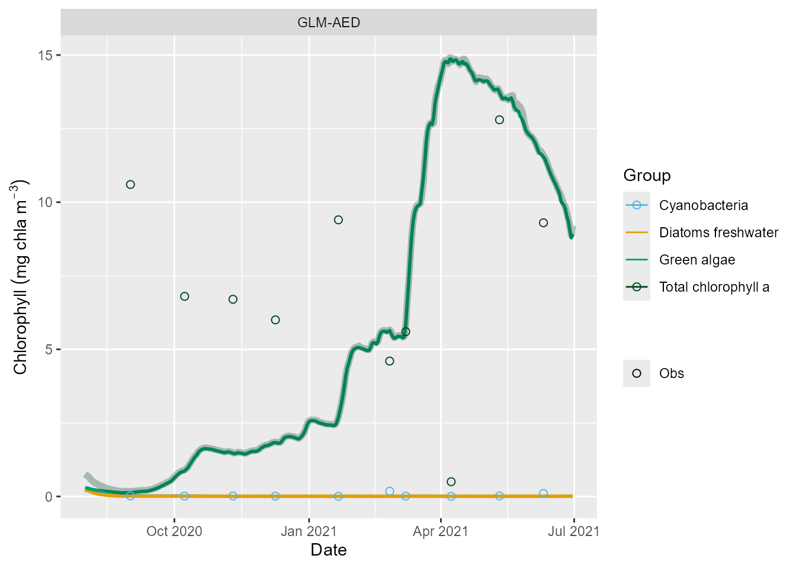
Similarly,plot_zoops() shows the zooplankton groups but
requires the zooplankton module to be active in the model configuration.
This example’s minimal config does not carry zooplankton/full phyto
groups.
plot_zoops(aeme) # zooplankton groupsInputs, not output
Three functions plot what went into the model rather than what came out – useful when a run looks wrong and the question is whether the forcing data is the problem.
Meteorology, as a tile plot (one row per variable, coloured by value, faceted by hydrological year):
plot_met_tile(aeme, var_inp = "MET_tmpair")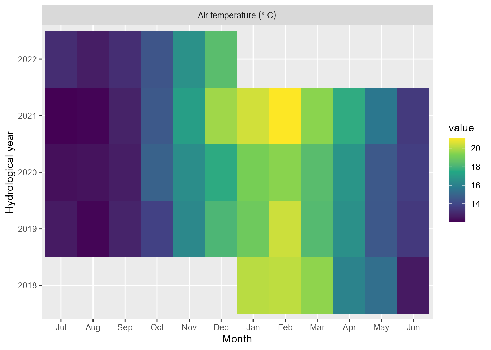
The hypsograph the model was built with:
plot_hyps(aeme)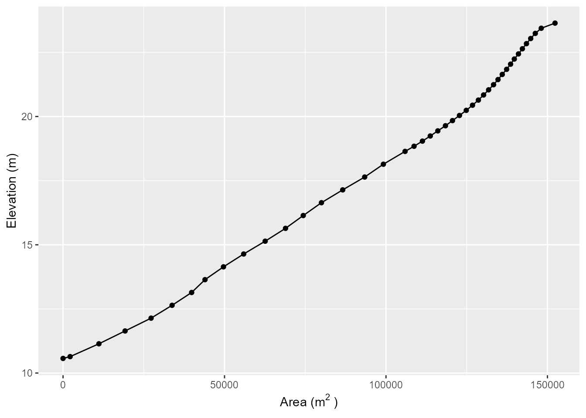
Inflows and/or outflows:
plot_flows(aeme, flow = "inflow")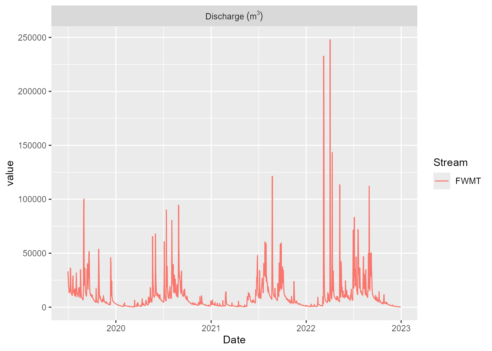
Cumulative heat fluxes (e.g. checking an energy budget):
plot_fluxes(aeme, cumulative = TRUE)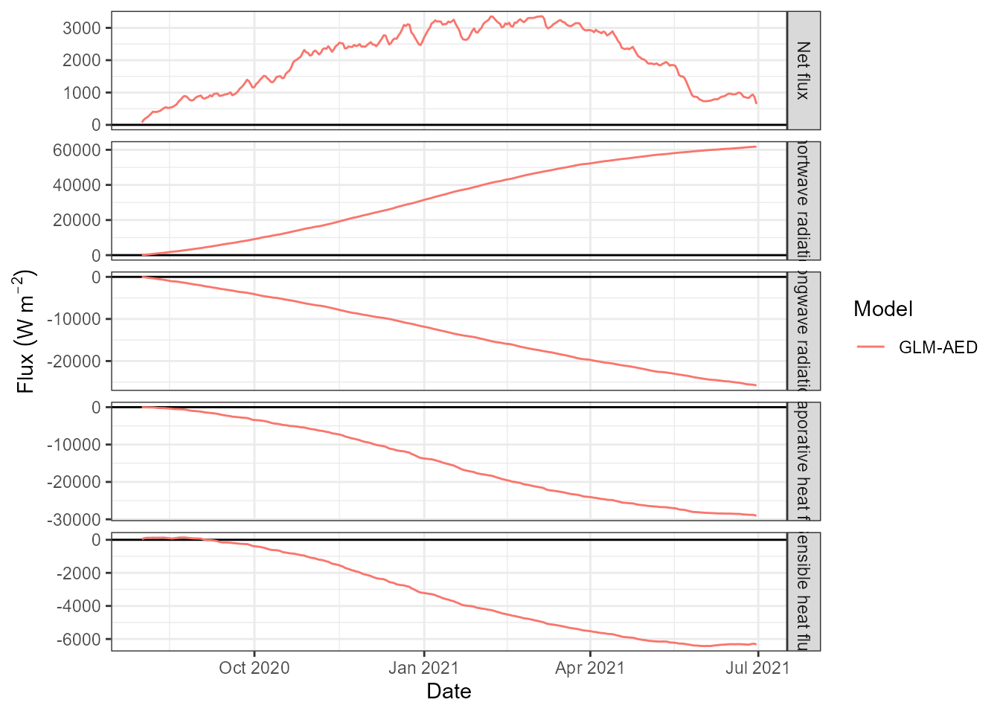
Working with a raw output list
plot_model_output() is the lowest-level of the plotting
functions: pass it an Aeme object directly, as below, or –
its other accepted input – the specifically classed list
read_glm_output()/read_gotm_output()/
read_simstrat_output()/read_dy_output()/read_model_outputs()
return (output(aeme) itself is a plain list and isn’t
accepted; use one of those readers if you need output outside the
Aeme object). It’s what every other plot_*
function on this page is ultimately built on:
outfile <- get_model_outfile(aeme, model = "glm_aed")$glm_aed
outfile
#> output
#> "C:/Users/runneradmin/AppData/Local/Temp/RtmpWWYQW5/LID45819_wainamu/glm_aed/output/output.nc"read_glm_output() reads the model output, projects onto
a standard grid and also does some unit conversions, especially for the
AED variables that are stored in mmol/m3 in the raw output but are more
commonly expressed in mg/L.
out <- read_glm_output(file = outfile)
plot_model_output(out, var_sim = "CHM_oxy")
#> Warning: Removed 84 rows containing missing values or values outside the scale range
#> (`geom_col()`).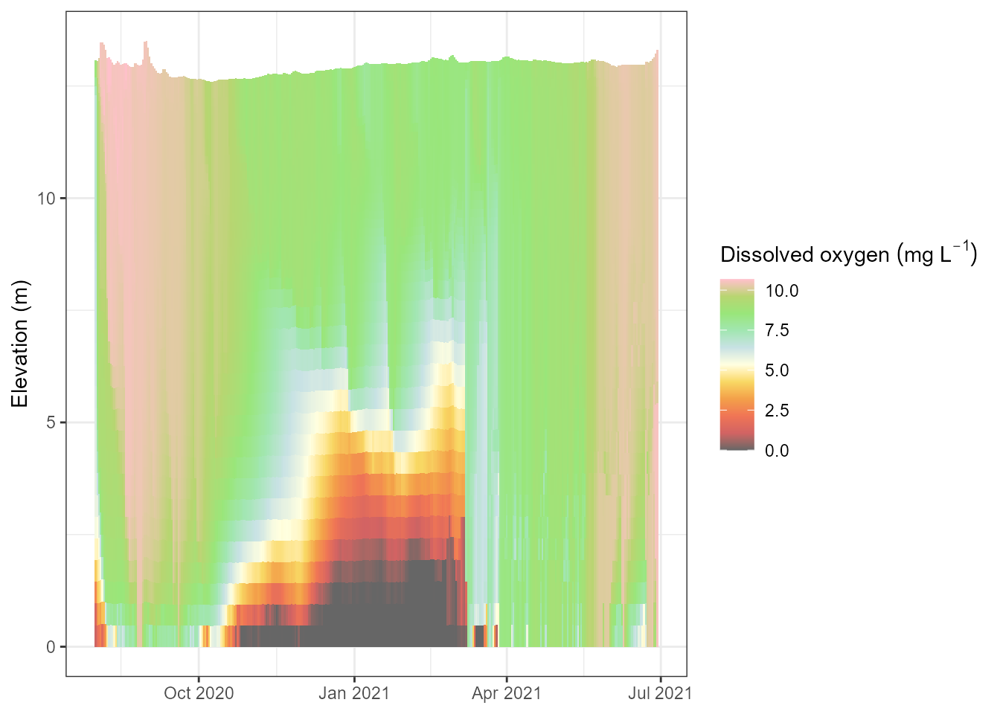
However, you can also load all raw output from the GLM netcdf output
file and plot any variable in its raw form e.g. model units and
Lagrangian grid, rather than the standardised grid and converted units.
This is useful for plotting variables that are not included in the
Aeme object by default. You need to use the raw variable
name for plotting instead of the standardised AEME variable name.
raw <- read_glm_output(file = outfile, raw = TRUE, load_all = TRUE)
raw
#> <aeme_output_raw> model: glm_aed
#> raw model units/names/depths (no AEME standardisation)
#> 335 dates (2020-07-31 to 2021-06-30)
#> 232 variables: lake_level, daily_qe, daily_qh, daily_qlw, daily_qsw, lake_volume, evaporation, evap_mass_flux, surface_area, LKE_evprte, tot_inflow_vol, overflow_vol, tot_outflow_vol, LKE_outftot, precipitation, LKE_pcpvol, surface_temp, z, NS, blue_ice_thickness, snow_thickness, white_ice_thickness, surface_layer, solar, wind, vol_snow, vol_blue_ice, vol_white_ice, rain, local_runoff, snowfall, seepage_vol, snow_density, albedo, max_temp, min_temp, Qsw, Qe, Qh, Qlw, light, benthic_light, surface_wave_height, surface_wave_length, surface_wave_period, lake_number, max_dT_dz, CD, CHE, z_L, H, V, A, salt, temp, dens, radn, extc, umean, uorb, taub, epsilon, NCS_ss1, NCS_ss1_vvel, NCS_ss1_set, NCS_ss2, NCS_ss2_vvel, NCS_ss2_set, NCS_set, OXY_oxy, OXY_sat, OXY_oxy_dsfv, OXY_oxy_atmv, SIL_rsi, NIT_amm, NIT_nit, NIT_nitrif, NIT_denit, NIT_anammox, NIT_dnra, PHS_frp, OGM_doc, OGM_poc, OGM_don, OGM_pon, OGM_dop, OGM_pop, OGM_docr, OGM_donr, OGM_dopr, OGM_cpom, OGM_poc_set, OGM_cpom_set, OGM_pon_set, OGM_pop_set, OGM_cdom, OGM_poc_hyd, OGM_pon_hyd, OGM_pop_hyd, OGM_doc_min, OGM_don_min, OGM_dop_min, OGM_doc_anaerobic, OGM_doc_denit, OGM_docr_min, OGM_donr_min, OGM_dopr_min, OGM_cpom_bdown, OGM_bod5, OGM_pom_vvel, OGM_cpom_vvel, PHY_cyano, PHY_cyano_IN, PHY_cyano_IP, PHY_cyano_NtoP, PHY_cyano_set_c, PHY_cyano_set_n, PHY_cyano_set_p, PHY_cyano_fI, PHY_cyano_fNit, PHY_cyano_fPho, PHY_cyano_fSil, PHY_cyano_fT, PHY_cyano_fSal, PHY_cyano_gpp_c, PHY_cyano_rsp_c, PHY_cyano_exc_c, PHY_cyano_mor_c, PHY_cyano_gpp_n, PHY_cyano_rsp_n, PHY_cyano_exc_n, PHY_cyano_mor_n, PHY_cyano_gpp_p, PHY_cyano_rsp_p, PHY_cyano_exc_p, PHY_cyano_mor_p, PHY_green, PHY_green_IN, PHY_green_IP, PHY_green_NtoP, PHY_green_set_c, PHY_green_set_n, PHY_green_set_p, PHY_green_fI, PHY_green_fNit, PHY_green_fPho, PHY_green_fSil, PHY_green_fT, PHY_green_fSal, PHY_green_gpp_c, PHY_green_rsp_c, PHY_green_exc_c, PHY_green_mor_c, PHY_green_gpp_n, PHY_green_rsp_n, PHY_green_exc_n, PHY_green_mor_n, PHY_green_gpp_p, PHY_green_rsp_p, PHY_green_exc_p, PHY_green_mor_p, PHY_diatom, PHY_diatom_IN, PHY_diatom_IP, PHY_diatom_NtoP, PHY_diatom_set_c, PHY_diatom_set_n, PHY_diatom_set_p, PHY_diatom_fI, PHY_diatom_fNit, PHY_diatom_fPho, PHY_diatom_fSil, PHY_diatom_fT, PHY_diatom_fSal, PHY_diatom_gpp_c, PHY_diatom_rsp_c, PHY_diatom_exc_c, PHY_diatom_mor_c, PHY_diatom_gpp_n, PHY_diatom_rsp_n, PHY_diatom_exc_n, PHY_diatom_mor_n, PHY_diatom_gpp_p, PHY_diatom_rsp_p, PHY_diatom_exc_p, PHY_diatom_mor_p, PHY_tchla, PHY_tphy, PHY_in, PHY_ip, PHY_gpp, PHY_ncp, PHY_upt_no3, PHY_upt_nh4, PHY_upt_n2, PHY_upt_po4, PHY_upt_dic, PHY_set, PHY_par, TOT_tn, TOT_tp, TOT_toc, TOT_tss, SDF_Fsed_oxy, SDF_Fsed_amm, SDF_Fsed_nit, SDF_Fsed_frp, NCS_swi, NCS_swi_dz, NCS_resus, NCS_d_taub, OXY_oxy_dsf, OXY_oxy_atm, SIL_dsf_rsi, NIT_amm_dsf, NIT_nit_dsf, PHS_frp_dsf, OGM_toc_sed, OGM_ton_sed, OGM_top_sed, OGM_poc_swi, OGM_doc_swi, OGM_pon_swi, OGM_don_swi, OGM_pop_swi, OGM_dop_swi, OGM_poc_res, OGM_pon_res, OGM_pop_res, PHY_phy_swi_c, PHY_phy_swi_n, PHY_phy_swi_p
#> 34 sediment variables: zarea, sed_temp, sed_heatflux, zone_ztemp, sed_layer_depth, SDF_Fsed_oxy_Z, SDF_Fsed_amm_Z, SDF_Fsed_nit_Z, SDF_Fsed_frp_Z, NCS_swi_Z, NCS_swi_dz_Z, NCS_resus_Z, NCS_d_taub_Z, OXY_oxy_dsf_Z, OXY_oxy_atm_Z, SIL_dsf_rsi_Z, NIT_amm_dsf_Z, NIT_nit_dsf_Z, PHS_frp_dsf_Z, OGM_toc_sed_Z, OGM_ton_sed_Z, OGM_top_sed_Z, OGM_poc_swi_Z, OGM_doc_swi_Z, OGM_pon_swi_Z, OGM_don_swi_Z, OGM_pop_swi_Z, OGM_dop_swi_Z, OGM_poc_res_Z, OGM_pon_res_Z, OGM_pop_res_Z, PHY_phy_swi_c_Z, PHY_phy_swi_n_Z, PHY_phy_swi_p_Z
plot_model_output(raw, var_sim = "OXY_oxy")
#> Warning: Removed 89687 rows containing missing values or values outside the scale range
#> (`geom_col()`).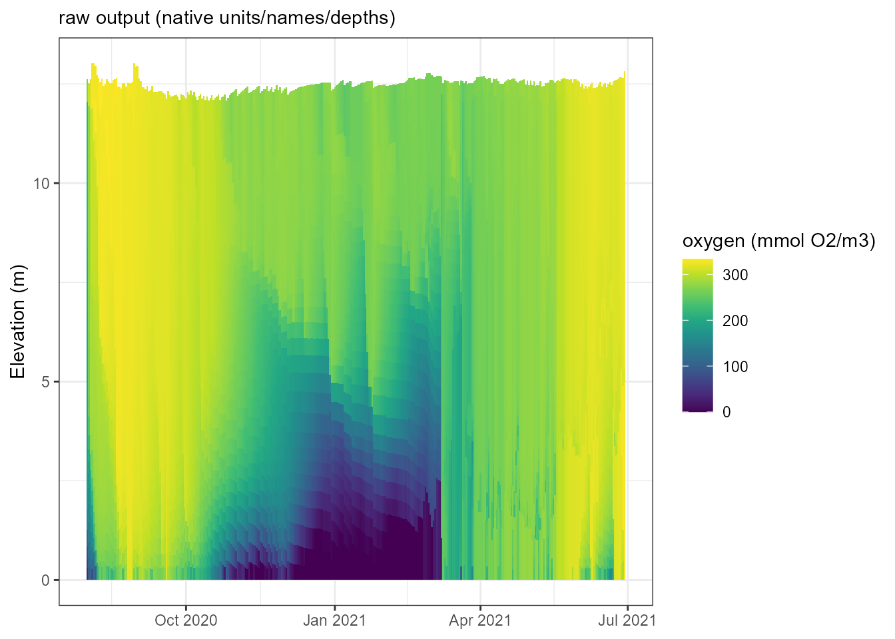
The AED sediment fluxes, which are not included in the
Aeme object by default. For example, to plot the sediment
oxygen flux:
plot_model_output(raw, var_sim = "SDF_Fsed_oxy_Z")
#> Warning: Removed 335 rows containing missing values or values outside the scale range
#> (`geom_line()`).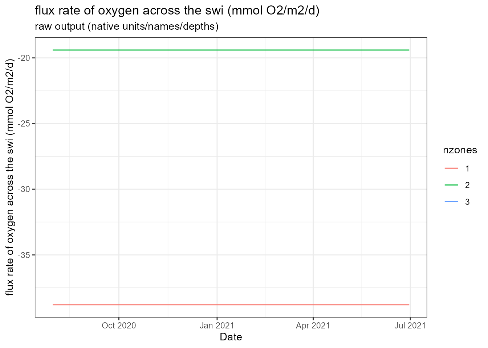